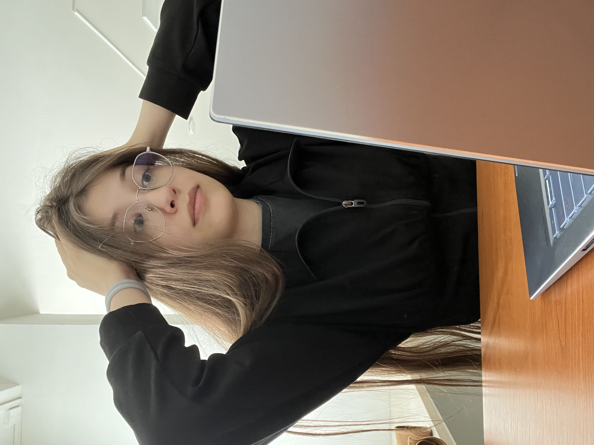

Kto som?
Ekaterina Salova - Študentka Aplikovanej informatiky
V súčasnosti som študentom 3. ročníka bakalárskeho štúdia a aktívne sa rozvíjam ako programátor. Svoje projekty a sieť kontaktov budujem cez GitHub a LinkedIn, pričom momentálne pracujem na bakalárskej práci a hľadám si prácu v odbore. Moje praktické zručnosti čoskoro preverí aj účasť na nadchádzajúcom hackathone.
Vo voľnom čase sa venujem aktivitám, ktoré rozvíjajú kreativitu a tímovú spoluprácu. S priateľmi radi hrávame kooperatívne videohry a stolovky (napríklad D&D), a taktiež radi navštevujeme kultúrne podujatia, ako bola naša nedávna návšteva výstavy modelov.
Moje kľúčove záujmy a štúdium:
-
Predmety, ktoré študujem na univerzite
- Lineárna algebra 2 - pokročilé matice, konečné polia a kvadratické formy.
- Webové technológie 1 - tvorba moderných webov a klientskych aplikácií v HTML, CSS a JS.
- Bakalársky projekt 1 - samostatná analýza a návrh riešenia pre záverečný projekt.
- Telesná kultúra 5 - rozvoj fyzickej kondície a zdravého životného štýlu na cvičeniach pilatesu.
-
Filmy a seriály
- Bullet Train: Jediný film za posledné roky, ktorý si ma úplne získal. Je v ňom všetko – skvelí herci, detektívka, humor, akcia a výborný koniec.
- Sherlock (BBC): Úžasná moderná interpretácia detektívok Arthura Conana Doyla. Fascinuje ma najmä chémia medzi postavami, ktoré sa postupne stanú skutočnou rodinou.
- Hore periskop! (Down Periscope): Nečakané odporúčanie od otca sa zmenilo na skvelo strávený večer a následné hľadanie podobných filmov.
- Strážcovia Galaxie 3: Neuveriteľne vyčnieva zo šablóny bežných superhrdinských filmov. Otvára veľmi dôležitú tému pokusov na zvieratách. Dojal ma k slzám, je veľmi smutný a asi nenájdem odvahu pozrieť si ho znova.
-
Najobľúbenejšie hry
- S.T.A.L.K.E.R. 2: Do tejto hry som sa zamilovala už po prvých úlohách. Aj keď je mapa obrovská, lokácie sa prechádzajú s radosťou – výborné dialógy, dabing, občas neobvyklé úlohy a, samozrejme, neznámo.
- The Witcher 3: Wild Hunt: Hra, ktorá by mala byť základným vstupom do herného sveta. Štúdio vytvorilo čarovné dielo so slovanskou mytológiou, monštrami a Klepnou (Roach).
- Cyberpunk 2077: Hra od rovnakého štúdia. Okrem toho, aká je skvelá, si ma získal aj prístup vývojárov. Keď mala hra po vydaní veľa chýb a čelila kritike, nevzdali to, nehodili projekt do zásuvky, ale roky pracovali na vylepšeniach a opravách. Nakoniec vytvorili ďalšie majstrovské dielo.
- Hollow Knight: Nádherná 2D skákačka, ktorá očarí od prvej sekundy. Príjemný dizajn, hlavolamy, parkour, súboje s bossmi a skvelá atmosféra.